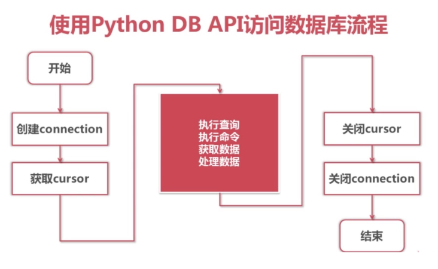

Database Interaction 数据库交互¶
Python DB API 访问¶
操作步骤¶

引入模块¶
from pymysql import *
建立连接¶
创建连接对象¶
调用connect()方法即可
conn=connect(参数列表)
- 参数
host：连接的mysql主机，如果本机是'localhost' - 参数
port：连接的mysql主机的端口，默认是3306 - 参数
database：数据库的名称 - 参数
user：连接的用户名 - 参数
password：连接的密码 - 参数
charset：通信采用的编码方式，推荐使用utf8
连接对象的方法¶
close()：关闭连接commit()：提交cursor()：返回Cursor对象，用于执行sql语句并获得结果
获取Cursor对象¶
获取Cursor对象：调用Connection对象的cursor()方法
cs1=conn.cursor()
- 用于执行sql语句，使用频度最高的语句为select、insert、update、delete
Cursor对象的方法¶
close()关闭execute(operation [, parameters ])执行语句，返回受影响的行数，主要用于执行insert、update、delete语句，也可以执行create、alter、drop等语句fetchone()执行查询语句时，获取查询结果集的第一个行数据，返回一个元组fetchall()执行查询时，获取结果集的所有行，一行构成一个元组，再将这些元组装入一个元组返回
Cursor对象的属性¶
rowcount只读属性，表示最近一次execute()执行后受影响的行数connection获得当前连接对象
参数化语句¶
- SQL语句的参数化，可以有效防止sql注入
- 参数化不同于python的字符串格式化，全部使用%s占位
元类实现ORM¶
1. 元类¶
1. ORM¶
概念：
- ORM 是 Python编程语言后端web框架 Django的核心思想，
-
“Object Relational Mapping”，即对象-关系映射，简称ORM。
-
使用实例对象映射数据库表，类属性映射数据表字段。让数据库操作变得像操作对象属性一样简单：
`class.property = data
2. 通过元类简单实现ORM中的insert功能¶
class ModelMetaclass(type):
"""元类 ModelMetaclass"""
def __new__(cls, name, bases, attrs):
mappings = dict()
# 判断是否需要保存
for k, v in attrs.items():
# 如果值是元组，那么保存在字典中。不去除重复地添加。
if isinstance(v, tuple):
print("Found Mapping: %s --> %s" % (k, v))
mappings[k] = v
# 删除已经在字典中存储的属性，即去重
for k in mappings.keys():
attrs.pop(k)
# 将之前的关键字及其对象引用存储到其属性中
attrs['__mappings__'] = mappings
attrs['__table__'] = name
return type.__new__(cls, name, bases, attrs)
class Module(metaclass=ModelMetaclass):
"""基类"""
def __init__(self, **kwargs):
for name, value in kwargs.items():
setattr(self, name, value)
def save(self):
fields = []
args = []
for k, v in self.__mappings__.items():
fields.append(v[0])
args.append(getattr(self, k, None))
# 检测数字类型和字符串类型
args_cmp = []
for tmp in args:
if isinstance(tmp, int):
args_cmp.append(str(tmp))
elif isinstance(tmp, str):
args_cmp.append("""'%s'""" % tmp)
sql = "insert into %s(%s) values (%s)" % (self.__table__, ','.join(fields), ','.join(args_cmp))
print('SQL: %s' % sql)
class User(Module):
uid = ('uid', "int unsigned")
name = ('username', "varchar(30)")
email = ('email', "varchar(30)")
password = ('password', "varchar(30)")
# 依照其元类进行类定制，那么其所有值均在 __mappings__ 的属性中
# __mappings__ = {
# "uid": ('uid', "int unsigned")
# "name": ('username', "varchar(30)")
# "email": ('email', "varchar(30)")
# "password": ('password', "varchar(30)")
# }
# 同时，还有一个属性为 __table__ = "User"
user = User(uid = 123, name="Aaron", email="abackhand@orm.com", password="xx123xx")
user.save()
- 编写时，请始终记住自己的需求：SQL语句。
- 可首先编写到统一类，再抽取到基类。